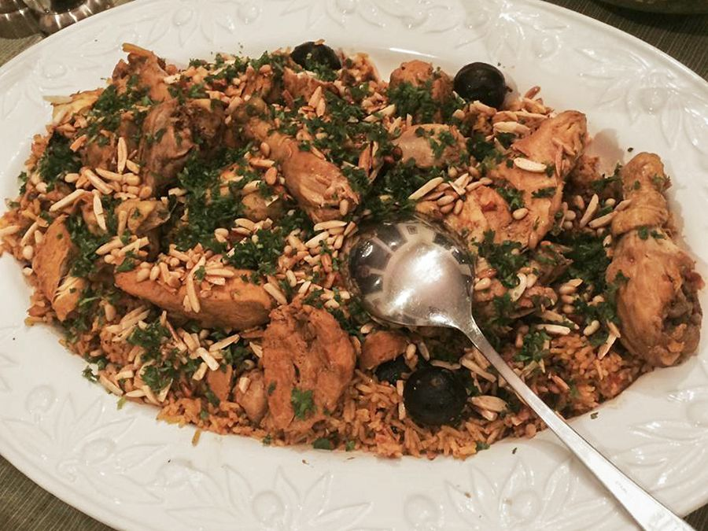

Kabsah

Description:
Kabsa is a flavorful and aromatic Middle Eastern rice dish made with spiced chicken, fragrant basmati rice, and a
blend of warm spices. This traditional dish is cooked in a rich tomato-based broth, enhanced with raisins and
toasted almonds for a delightful mix of textures and flavors. Perfect for a hearty and satisfying meal!
Ingredients:
Spice Mix:
- 1/2 teaspoon saffron
- 1/2 teaspoon ground cinnamon
- 1/2 teaspoon ground allspice
- 1/2 teaspoon dried whole lime powder
- 1/4 teaspoon ground cardamom
- 1/4 teaspoon ground white pepper
Kabsa Dish:
- 1/4 cup butter
- 1 onion, finely chopped
- 1 whole chicken, cut into 8 pieces
- 1/4 cup tomato puree
- 1 can diced tomatoes, undrained
- 3 carrots, peeled and grated
- 2 whole cloves
- 1 pinch ground nutmeg
- 1 pinch ground cumin
- 1 pinch ground coriander
- salt and freshly ground black pepper
- 3 1/4 cups hot water, plus more if needed
- 1 cube chicken stock
- 2 1/4 cups unrinsed basmati rice
- 1/4 cup raisins
- 1/4 cup toasted silvered almonds
Steps:
-
Make spice mix: Stir together saffron, cinnamon, allspice, lime powder, cardamom, and white pepper in a
small bowl; set aside.
-
Make dish: Melt butter in a large stockpot or Dutch oven over medium heat. Cook and stir onion and garlic in
butter until onion has softened and turned translucent, about 5 minutes. Add chicken and cook over
medium-high heat, stirring occasionally, until lightly browned, about 10 minutes. Mix in tomato purée.
-
Stir in canned tomatoes with juice, carrots, cloves, nutmeg, cumin, coriander, salt, black pepper, and
reserved spice mix. Cook for about 3 minutes; pour in water and add chicken bouillon cube.
-
Bring sauce to a boil, then reduce heat, and cover the pot. Simmer until chicken is no longer pink and the
juices run clear, about 30 minutes.
-
Gently stir in rice. Cover the pot and simmer until rice is tender and almost dry, about 25 minutes; add
raisins and a little more hot water, if necessary. Cover and cook until rice grains separate, 5 to 10
minutes.
-
Transfer rice to a large serving platter and arrange chicken on top. Sprinkle with toasted slivered almonds.
Bon Appétit